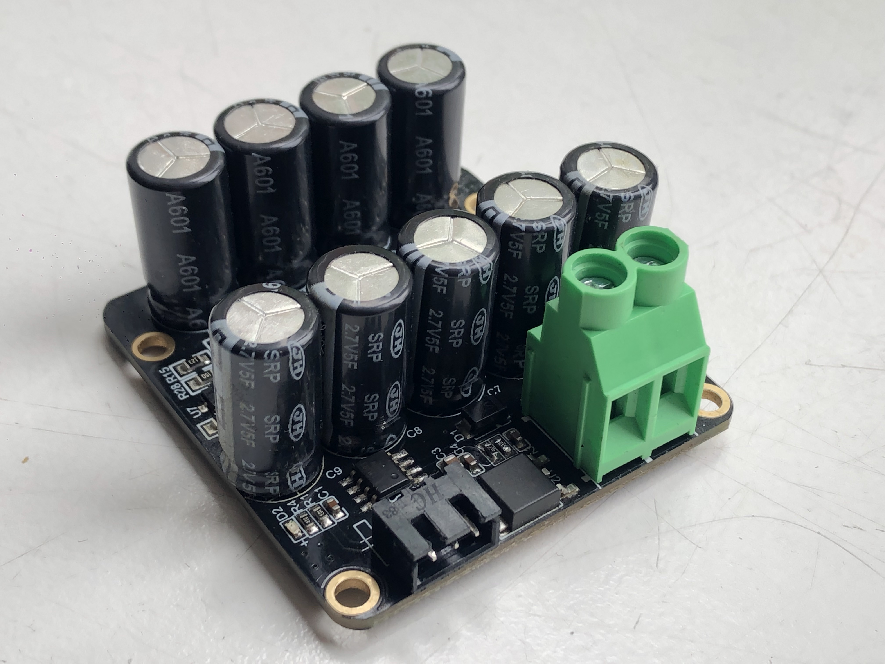

Programming, robotics, traveling
Заводской брак в модуле BTT UPS 24 V1.0 или почему не работает UPS для 3д-принтера
Прежде всего хочу сделать заметку, что я не профессиональный электронщик, а любитель. И во многом, что изложено в статье я разбирался впервые.
Проблема: Ожидается срабатывание платы (подача сигнала контроллеру 3д-принтера) при потере питания принтера == небольшом падении напряжения в районе 24 вольт (за счет разрядки ионистров не будет резкой потери питания в цепи 24х вольт). Однако плата срабатывает только при 19 вольтах, что опасно, тк при таком напряжении, энергии в ионистрах уже мб не достаточно для совершения pre-recovery процедур.
Пруф покупки модуля у BIGTREETECH Marvellous Store 30 ноября 2021 года.
{kind=link}

Все началось с того, что после получения товара и разбора моего 3д принтера, я осознал, что ошибся с выбором версии модуля и взял модуль на 24 вольта, вместо 12. Но ничего страшного подумал я, и решил разобраться как устроен модуль и как его можно переделать под 12 вольт.
Схема устройства
Достаточно быстро я наткнулся на топик на сайте 3dtoday.ru. В котором изложена его схема (нумерация компонентов не совпадает, но в целом всё так).
Схему можно условно разделить на две отдельные:
- схема с ионистрами позволяющими питать какое-то время принтер, когда напряжение питания пропало;
- схема с компаратором по напряжению, сигнализирующая контроллеру принтера, что напряжение питания пропало.
Часть с ионистрами
Что касается первой части, то, каждый последовательный элемент содержит управляемый стабилитрон с напряжением открытия 2.5 вольта и делитель напряжения с коэфициентом 13.5, что как раз даёт в средней точке 2.5 вольта при питании 2.7 вольта. Соответственно управляемый стабилитрон откроется и не позволит зарядить ионистр больше 2.7 вольт. Соответственно, эта часть схемы может работать с любым входным напряжением: как меньшим, так и большим. Но она просто не зарядится больше чем 2.7 вольта * 9 ионисторов – итого 24.3 вольта.
Симуляция питания схемы с ионистрами напряжениями 24 и 12 вольт.
Часть с компаратором
Куда интереснее вторая часть схемы, давайте взглянем на неё более подробно и разберем её принцип работы. Условно можем разбить эту схему на составляющие части:
- Линейный стабилизатор напряжения с шунтирующей обвязкой и защитным диодном (от случайной смены полярности)
- Делитель входного напряжения
- Компаратор LM393
- Подтягивающий резистор на 10 КОм.
Про линейный стабилизатор думаю говорить особо нечего. Он понижает входное напряжение до 5 вольт. Разберем как работает компаратор.
Как работает компаратор?
И так возьмём некоторый компаратор и рассмотрим принцип его действия:
На графике видно, что когда напряжение на неинвертирующем входе (IN+) больше, чем на инвертирующем (IN-), на выходе компаратора (OUT) высокий логический уровень. Соответственно, в обратном случае – низкий логический уровень. Такую диаграмму работы приводят практически все материалы, что я находил в интернете, когда пытался разобраться как работает компаратор. Однако, на практике это не соответствуют действительности в одном не большом, но очень важном моменте.
А именно, что если IN+ > IN-, то OUT висит в воздухе. А если IN- > IN+, то OUT = напряжению земли компаратора (GND).
Соответственно, возвращаясь к нашей схеме выше, подтягивающий резистор на 10КОм нужен, для того, чтобы, когда напряжение питания принтера падает, и IN- становится меньше IN+, тогда OUT оказывается через подтягивающий резистор замкнут на 5 вольт и контроллер принтера получает высокий сигнал, что питание пропало.
Делитель напряжения
Давайте теперь сделаем акцент на то, когда должен сработать компаратор.
Сделаем расчет коэфициента делителя напряжения: (19.1KOm + 4.99KOm)/4.99KOm ≈ 4.83
- Соответственно, при питании 24 вольта на инвертирующем входе
24V / 4.83 ≈ 4.97V. - А на неинвертирующем входе компаратора – опорное напряжение в 5 вольт от линейного стабилизатора
Следовательно ожидается, что мы чуть-чуть должны повысить напряжение питания принтера с 24 вольт на 0.5-1 вольт. И тогда на инвертирующем входе в нормальном состоянии будет напряжение немного больше, чем опорное. Таким образом нормальный сигнал от платы будет 0 вольт. А если напряжение падает ниже 24х вольт, на выходе будет 5 вольт.
Делитель напряжения – сайт hiser.guru.
И тут мы подошли к основной проблеме, с которой я столкнулся – это не работает.
Схема не работает
Тут происходило самое интересное, что я только не пробовал, всё указывало на то, что всё верно, но схема ведет себя некорректно. В итоге после сбора около 20 разных схем для проверки гипотез на макетных платах я выяснил в чём проблема, отсюда по порядку.
Проблему я заметил после смены резисторов в делителе напряжения на номиналы 5.1КОм и 3.6КОм. Таким образом на инвертирующем входе получается 5 вольт при напряжении питания 12.1 вольта. Однако, компаратор срабатывал в районе 9.5 вольт на входе модуля.
После я подумал, что-то недопонимаю, и вернув оригинальные резисторы, и протестировав на 24 вольтах, срабатывания тоже не происходило вовремя. Напряжение падало до 19 вольт и только тогда срабатывал компаратор.
Я измерил напряжение на IN-, в обоих случаях (при оригинальных резисторах и питании 24 вольта, а также при моих резисторах и питании 12 вольт) оно было около 3.95 вольта, когда компаратор срабатывал.
Тут я решил взять другой компаратор (взял LM339 из старого блока питания компьютера) и собрал схему уже на макетной плате с подстроечным резистором. Я попробовал разные компараторы, шунтирующие конденсаторы в цепи питания компаратора, и много другого. Тут я пропущу кучу итераций и мыслей в течении года, тк я брался за эту задачу не раз.
На фото запечатлено напряжение в момент срабатывания компаратора LM339. При повторении схемы как на плате BTT UPS 24 V1.0.
В конце я решил попробовать запитать компаратор от источника питания применяемого в тесте напряжением 7 вольт. И всё заработало как ожидалось, компаратор срабатывал в районе 5 вольт на IN-. Однако, когда я переключал питания компаратора к стабилизатору на 5 вольт (эти же 5 вольт шли на IN+), компаратор продолжал срабатывать при 3.95 вольта, вместо 5 вольт.
Тут я подумал, что компаратору просто не хватает напряжения питания и полез в даташиты, чтобы убедиться, что я все правильно делаю. 3-36V – гласили все даташиты.
Для последнего эксперимента я взял регулируемый источник питания, и запитал компаратор отдельно от питания делителя напряжения. И оказалось, что с уменьшением напряжения питания компаратора уменьшался и верхний предел сравниваемых напряжений, как раз с разницей в ≈1.1 вольта.
И так, загадка крылась в устройстве компаратора.
Дело в том, что внутри компаратора находится дифференциальный каскад и для его работы требуется, чтобы напряжение работы компаратора было больше на 1.1-2 вольта, чем требуемое напряжение срабатывания.

Не будь в схеме компаратора защитных диодов - дифференциальный каскад просто сгорел бы при таком питании.
Далее я выпаял компаратор с платы, для того, чтобы воспроизвести тест на нём. Средняя фотография – напряжение в момент срабатывания компаратора при питании от стабилизатора в 5 вольт (как у на плате BTT UPS 24 V1.0). Фотография справа – напряжение в момент срабатывания компаратора от напряжения в 7 вольт.
Позже я все таки отыскал в даташите информацию с этим ограничением:
Для успокоения души я выпаял ещё пару операционных усилителей из старого ADSL роутера ST EZ714 и мультиметра LM358 и проверил на них.
Правда один ОУ я случайно сжег, забыв добавить в схему токоограничетельный резистор перед светодиодом. В общем результаты повторились. И я могу смело утверждать, что здесь присутствует ошибка в схеме.
Выводы
Возникает резонный вопрос, почему никто массово не жалуется на этот модуль? Я полагаю для этого есть две причины:
- Это сложное технической устройство, которое работает с еще более сложным техническим устройством – контроллером принтера. Далеко не все, кто его устанавливает, может разобраться в принципе и деталях его работы, а скорее просто строго следует инструкции.
- Второе и самое важное то, что ошибка в схеме не полностью исключает срабатывание модуля (как мы выяснили он срабатывает при 19 вольтах). Что, учитывая первую причину, пользователи могут списать это на плохое исполнение / брак. Или просто не заметить, если принтеру хватит энергии уже подразряженных ионистров, чтобы успеть исполнить pre-recovery процедуры.
Как это починить, я вижу два пути:
- Подбор такого делителя напряжения, чтобы на инвертирующем входе было напряжение в 3.95 вольта. Однако этот вариант мне не особо нравится, потому что тут мы полагаемся на имперически вычисленное напряжение некорректно подключенного компаратора.
- Запитка компаратора от входоного напряжения платы. Чтобы ничего не менять на плате, я предлагаю поднять 8 ногу от платы. Добавить диэлектрик под нее, и сверху поставить перемычку (проводок) к ножке входа LM7805. В идеале можно также добавить шунтирующий конденсатор на 100нФ.
На днях поиграюсь с платой еще, мб найду какое-то более красивое решение проблемы.
Я написал продавцу спустя год, конечно, не ожидая возврата, а нормальной реакции – обратной связи и внесения изменений в плату. Сейчас продавец спросил, подходит ли мне возврат. Посмотрим чем это закончится. (В течении месяца обновлю статью).